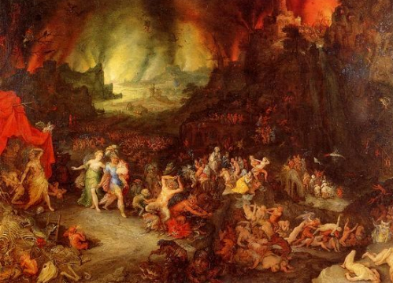

Contexto
En la mitología griega, el Tártaro es tanto una deidad como un lugar del mundo inferior, más profundo incluso que el Hades. En antiguas fuentes órficas y en las escuelas mistéricas es también la «cosa» ilimitada que existió primero, de la que nacieron la Luz y el Cosmos.
Toda religión tiene un lugar destinado para los bienaventurados y otro para los condenados, como una manera de implantar la justicia divina que mantiene el equilibrio universal. En la mitología griega existía el denominado Tártaro, un sitio tormentoso de eterno sufrimiento, similar al Infierno del Cristianismo.
El Tártaro, además de ser un lugar, era una deidad, hijo de Éter y Gea. El Tártaro, como sitio, estaba ubicado más profundo aún que el Hades, en las entrañas del Inframundo. Algunas religiones mistéricas lo consideraban aquello que existió primero y de donde surgió la Luz y el Cosmos. Este mundo de eterna oscuridad era una de las entidades primordiales junto con el Caos, Gea y Eros, que surgieron en el universo.
El Hades era el mundo de los muertos al que entraban todos, pero el Tártaro era el hogar de los condenados, quienes eran guardados por gigantes de decenas de enormes cabezas y cientos de brazos fuertes llamados Hecatónquiros. Al igual que el Infierno dantesco, en el Tártaro el castigo se adecuaba a la falta cometido en vida. Como ejemplos basta con citar el mito de Sísifo, el de Ixión, o el de Tántalo, que gozaba de los banquetes de los dioses y de la confianza de ellos, hasta que los traicionó y fue castigado con la tentación sin satisfacción, sumergido hasta el cuello en un lago, bajo un árbol de ramas bajas repletas de frutas que, cada vez que intentaba comer o beber, éstos se retiran inmediatamente de su alcance.
Precio y servicio
Horarios: Se recomienda venir los domingos de 17 a 20
Requisitos: Morir y haber enfadado al pipiolo de Zeus
Servicios: Una cerveza caliente, una tostada de mermelada de aceitunas y una coca cola sin gas
Precio: 900 almas.